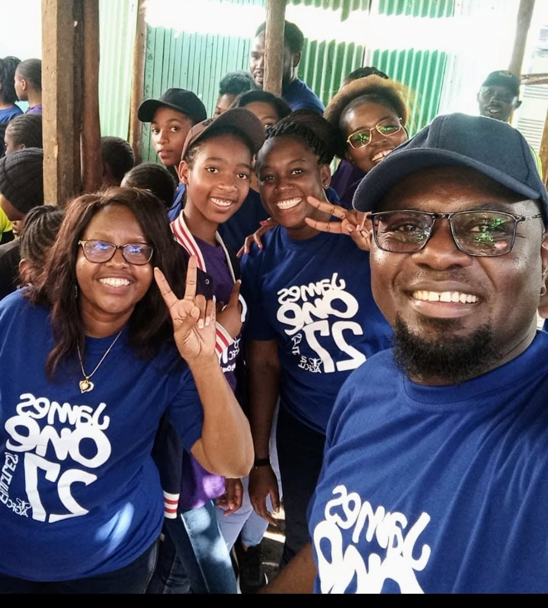

OUTREACH
Reaching The Vulnerable
Supporting vulnerable and less privileged people within society through practical care.
Learn More →Bringing faith, hope and love to vulnerable and less privileged people through practical care, compassion and community outreach.

Amazing Grace Family care (AGFC) is a foundation registered under the societies of Kenya under section 10 of the society Act.
Since 2014 Amazing Grace Family care foundation mandate has been to impact the love of God to families by bringing hope and transformation by acting as a transitional bridge into a place of comfort and love for the lost, the forgotten, the hopeless and the broken hearted.
Under the leadership of the visionary, thousands of families have been impacted through the love of God.
Learn More About AGFC →We believe that care becomes meaningful when faith and compassion are translated into practical action.
Supporting vulnerable and less privileged people within society through practical care.
Learn More →
Reaching children and institutions that provide care to children in need.
Learn More →
Turning compassion into meaningful support for people and families.
Learn More →
We believe that care becomes meaningful when faith and compassion are translated into practical action.

To empower those in incarceration and restore their hope, through the word of God we engage in regular provisions in food items including hygiene items for female prisoners, inmate counselling, fellowship sessions, evangelical outreach and distribution of devotions

Our aspiration is for children’s homes to become a centre of excellence and central hubs of the community support, education, health, welfare, self-sufficiency and empowerment. We support various children homes with cash donations, property refurbishment, groceries and clothing donations

We believe that sharing is caring and ultimately we aim to give others opportunity to smile and enjoy the finer things in life through our hosting functions
Connect with Amazing Grace Family Care Foundation and learn more about our community outreach and work.